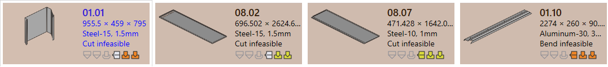
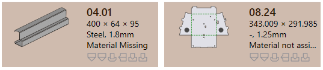
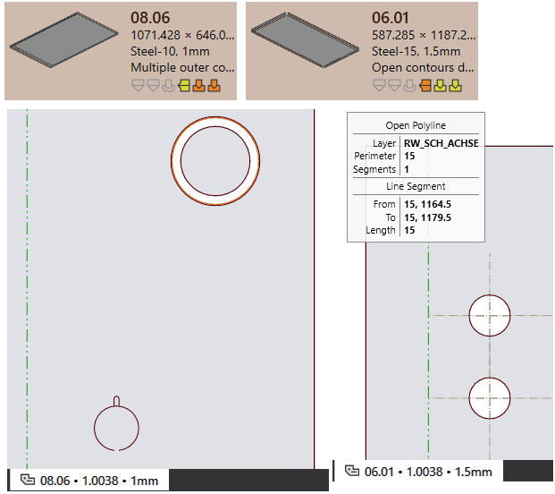
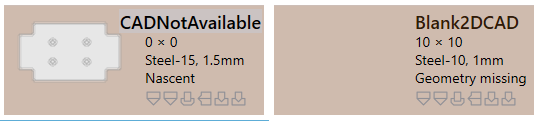
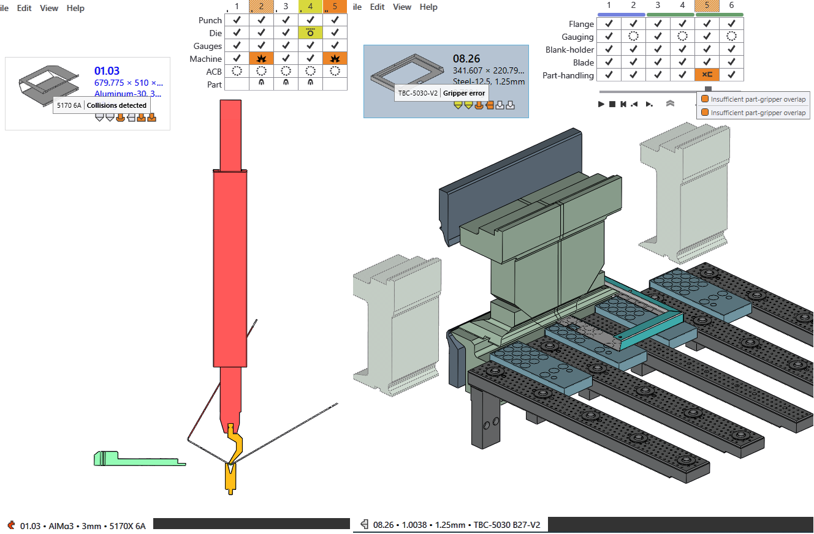
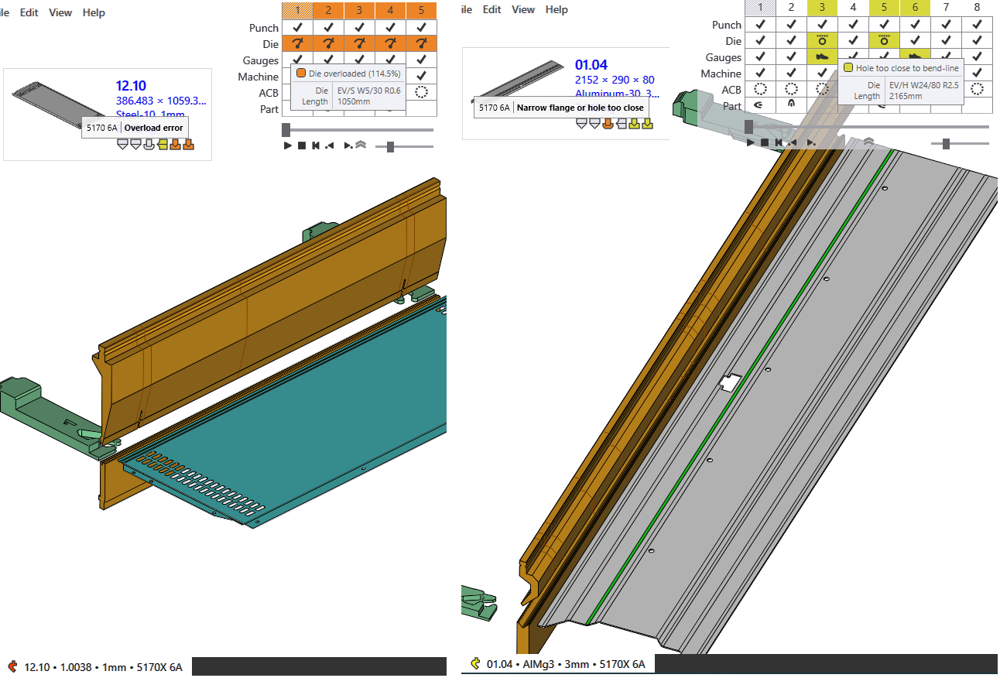
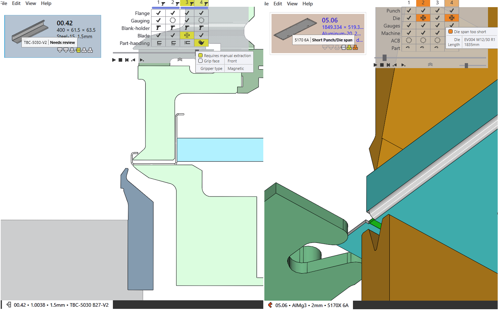
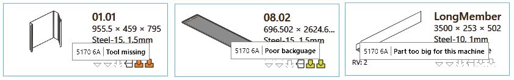
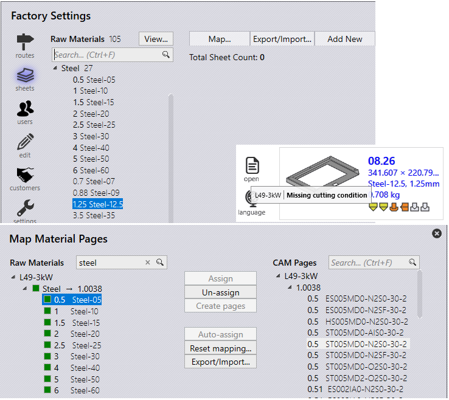

Non fattibile (piega e taglio)
-
JFY Plus assegna lo stato Piega non fattibile al pezzo se non è stata trovata una soluzione di piegatura
durante l’attrezzaggio automatico.
-
Se la soluzione di piegatura [08.07] ha un’avvertenza che viene ignorata,
si passa automaticamente alla soluzione di taglio.
-
Il pezzo viene messo nello stato Taglio non fattibile se non è stata trovata una soluzione di taglio fattibile.

=== Errore materiale
- Materiale mancante: spessore inizialmente letto da modello e materiale assegnato
che viene confrontato con il materiale grezzo JFY Plus. Se non esiste, si tratta di
un errore Materiale mancante.
- _
Material not assigned: il modello non ha un campo mappato rispetto al materiale, quindi
è assegnato con Materiale non assegnato.

=== Errore geometria
- Open contours detected:
CAD ha un’entità aperta.
- Multiple outer contours detected
: CAD ha più loop chiusi.

- Nascente: caricamento di un pezzo dal foglio di calcolo csv o xlsx, i file CAD mancanti sono
creati come errore Pezzo nascente.
- Geometry missing
: CAD non ha geometria valida o disponibile.

== Errore CAM
=== Errore attrezzaggio di piegatura
Di seguito sono riportati gli errori attrezzaggio di piegatura.

- Utensile Overload error
e foro vicini alla linea di piega.

- Needs review
e lunghezza corta del punzone/matrice.

- Tool missing
, Poor backguage
, pezzo troppo grande per la macchina.

=== Errore attrezzaggio di taglio
Di seguito sono riportati gli errori attrezzaggio di piegatura.

- Errore sfridi da punzonatura: per l’attrezzaggio di punzonatura, il loop interno è attrezzato senza punti di giunzione.
- Untooled or partially tooled contours
: segmenti con attrezzaggio di punzonatura mancanti.